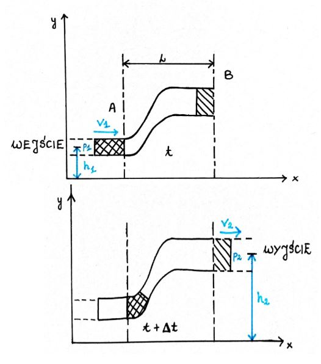
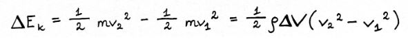
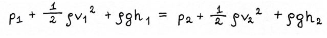

Prawo Bernouliego
Opisuje ono zależności ciśnienia i prędkości dla cieczy, często zakłada zmianę wysokości.
Spróbujmy wyprowadzić sobie wzór używany w prawie Bernoulliego na podstawie poniższego rysunku, obrazującego przepływ wody w strudze.
Gdzie:
t - czas
v1 - prędkość cieczy w punkcie A
v2 - prędkość cieczy w punkcie B
p1, p2 - ciśnienie
h1, h2 - wysokość na jakiej znajduje się ciecz
Założenie: ciecz ma stałą gęstość, objętość tej cieczy w punktach A i B są takie same
Równanie Bernoulliego stosuje się ściśle jedynie do płynu doskonałego.
*płyn doskonały - jest nieściśliwy i i nie ma lepkości, a jego przepływ jest ustalony i bezwirowy
*przepływ ustalony (laminarny) - gdy prędkość poruszającego się płynu w każdym wybranym punkcie nie zmienia się z upływem czasu
*nieściśliwy - jego gęstość jest stała
*nie lepki - lepkość płynu to miara oporu, jaki stawia płyn jego przepływowi (zjawisko analogiczne do tarcia między ciałami stałymi → w obu przypadkach Ek poruszających się ciał ulega zmianie w energię cieplną
*przepływ bezwirowy - umieszczone w płynie ziarenko nie obraca się wokół osi przechodzącej przez jego środek masy, niezależnie od tego, czy porusza się po torze kołowym, czy nie
Wychodzimy z zasady zachowania energii, która mówi, że praca równa się różnicy energii kinetycznej
W = ΔEEk = ½mv2
Następnie, wyliczamy różnicę Ek cieczy w punkcie A i B.
Skoro wiemy, że objętości są takie same (jest to płyn doskonały), masa również jest taka sama. → We wzorach na energię kinetyczną masa będzie taka sama, a różna prędkość
Δm - masa płynu, który wpływa do rury na końcu wejściowym i wypływa na końcu wyjściowym, w przedziale czasu Δt
Wykonywana praca ma dwa źródła:
a) Siłę ciężkości (Δmg)
b) Siłę działającą na płyn przy wtłaczaniu i wypychaniu płynu z rury (pS)
p - ciśnienie
S - pole powierzchni przekroju rury
a) Praca wykonana przez siłę ciężkości:
b) Praca wykonana przez siłę działającą na płyn przy wtłaczaniu i wypychaniu
FΔx - to praca wykonana przez siłę o wartości F, działająca na próbkę płynu o polu przekroju poprzecznego S, przy przemieszczeniu płynu na odległość Δx
~Praca wykonana nad układem: p1ΔV
~Praca wykonana przez układ: -p2ΔV
~Suma:

Cała praca to suma dwóch, na które przed chwilą rozłożyliśmy, więc:
Podstawiamy znane nam już wartości w tym równaniu.
Po wymnożeniu nawiasów i uporządkowaniu wyrażenia otrzymamy:
Gdzie:
p - ciśnienie
ρ - gęstość cieczy
v - prędkość cieczy
g - przyśpieszenie ziemskie
h - zmiana wysokości
Oznacza to, że gdy zmienia się np. prędkość to musi się także zmienić jedna z pozostałych wartości, najczęściej ciśnienie. Jeśli więc wzrośnie prędkość to ciśnienie musi spaść.
Na nasze potrzeby będziemy wykorzystywać uproszczony wzór:
Możemy to zrobić, gdyż w naszym przypadku nie będzie zachodzić żadna zmiana h, czyli cały ten człon wynosiłby 0.
Ciśnienie
Aby dowiedzieć się jak powietrze będzie działać na nasz żagiel musimy najpierw wiedzieć że będzie ono przede wszystkim wywierać na nim ciśnienie. W celu wyjaśnienia tego zjawiska musimy skorzystać z prawa Bernoulliego.
Spróbujmy teraz dzięki poznanemu prawu wyjaśnić co dzieje się na rysunku. Przede wszystkim wyjaśnijmy sobie co na nim jest. Widzimy żagiel, linie dookoła niego można porównać do poziomic, więc im większe jest ich zagęszczenie tym większe będziemy mieć różnice ciśnienia. Co w efekcie oznacza silniejszy wiatr. Korzystając z prawa Bernoulliego opiszmy to co się tu dzieje, literą “z” opiszemy to co się dzieje nad żaglem, czyli po zawietrznej, a literą “n” to co pod, czyli po nawietrznej. Powstaje nam równanie:
pz + ½ ρvz2 = pn + ½ ρvn2Z rysunku możemy wywnioskować, że vz>vn, bo będzie tam silniejszy wiatr, czyli powietrze będzie poruszać się z większa prędkością. Jeśli porównamy to z naszym równaniem okaże się, że pz < pn, bo obie strony równania muszą być równe, więc ciśnienie po dwóch stronach żagla będzie inne. Wiemy, że wiatr wieje od wyżu (pn) do niżu (pz), czyli powstanie nad siła działająca ze strony nawietrznej do zawietrznej.
Te różnice ciśnienia możemy doświadczalnie zmierzyć. Wyniki pokazuje nad ten wykres:

Względną wartość ciśnienia, która jest wartością bezwymiarową, otrzymujemy dzięki temu równaniu:
pw = (pm-pa)/(½ ρv2)Gdzie:
pw - względna wartość ciśnienia
pm- zmierzone doświadczalnie ciśnienie
pa- ciśnienie atmosferyczne
ρ - gęstość strumienia powietrza
v- prędkość strumienia
Możemy więc zauważyć, że względna wartość ciśnienia po stronie nawietrznej jest dodatnia, natomiast po zawietrznej tworzy nam się podciśnienie.
Jeśli przyjrzymy się wykresowi to zauważymy, że za masztem (pierwsze % długości cięciwy) następuje gwałtowny spadek ciśnienia po obu stronach żagla. Pokazuje to poniższy rysunek:
Strumienie powietrza przebiegają równolegle do powierzchni masztu. Niestety kończy się on nagle, przez co strumienie powietrza gwałtownie się od niego odrywają i postaja nam zawirowania. Nazywane są one wirami karmana, które powodują spadek ciśnienia. Aby temu zapobiec stosuje się bardziej wydłużone maszty, aby łagodniej się kończyły.